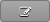
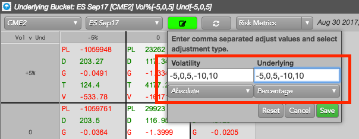
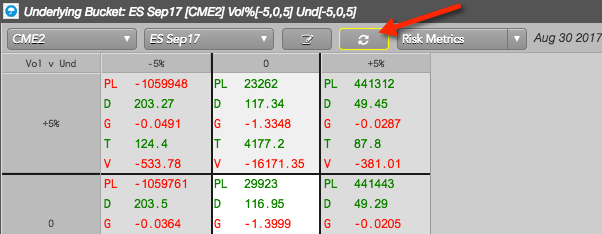
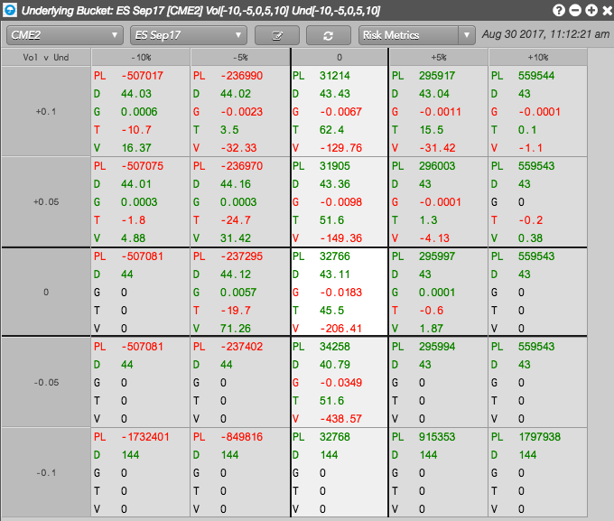

Open the Options Risk Matrix widget, select an account, and click
 .
.
Select a product, underlying, or expiry.
If two expiries have the same underlying instrument, you can choose to see the whole product (e.g., E-mini S&P 500), the options and futures that expire into the underlying instrument (e.g., ES Sep17), or the individual options expiry (e.g., Sep17).
Click  to enter a scenario of adjustments:

- For Volatility, enter global volatility adjustments (e.g., -5,0,5,-10,10) in the text box and select Absolute.
- For Underlying, enter futures contract price adjustments (e.g., -5,0,5,-10,10) in the text box and select Percentage.
- Click Save. The adjustments will automatically sort from smallest to largest in the matrix.
After saving the adjustments, the Refresh button is highlighted.

Note: Options Risk Matrix does not calculate and display your scenario until you click this button.
Click Risk Metrics to select which Greeks and metrics to display and click OK.
To calculate and display the estimated change in your open position based on each adjustment, click  .
.
The options risk scenarios are displayed in the matrix.

Tip: Right-click in the widget and click Export to csv to save the scenarios in a CSV data file.